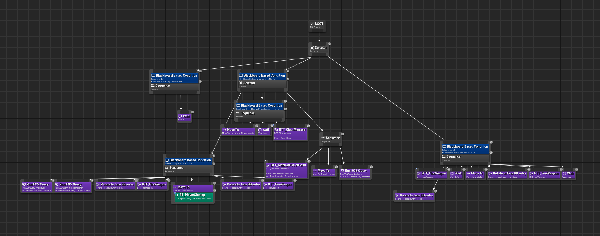

敵人巡邏與警戒 AI 行為樹
1. 機制設計目標
核心目標：讓潛行關卡中的守衛 AI 具備「可預測但具壓迫感」的反應層次。透過行為樹（Behavior Tree, BT）與黑板變數（Blackboard），將 AI 行為劃分為常態巡邏、聲響／殘影調查、全面追擊三階段，避免玩家一被瞥見就瞬間失去潛行樂趣。
2. 邏輯流程圖與引擎實作
flowchart TD
Root([Root 根節點]) --> Selector{Selector 優先權選擇器}
Selector -->|AlertLevel == 2| Combat[Sequence: 追擊與攻擊玩家]
Selector -->|AlertLevel == 1| Investigate[Sequence: 移動至最後目擊點並環顧]
Selector -->|AlertLevel == 0| Patrol[Sequence: 沿 Spline 路徑巡邏]
Combat --> LostSight{失去視野超過 5 秒?}
LostSight -->|是| Downgrade[降至 AlertLevel = 1 進入搜查]
LostSight -->|否| KeepChase[持續更新 TargetLocation]

3. 關鍵參數設定表
| 參數名稱 | 資料型別 | 預設值 | 設計用途說明 |
|---|---|---|---|
SightRadius |
Float | 1800.0 cm | AI 視覺扇形的最大偵測距離 |
PeripheralVisionAngle |
Float | 65.0 deg | 單側視野半角，總前方可視夾角為 130 度 |
SuspicionBuildRate |
Float | 0.8 / sec | 玩家處於視野邊緣時，警戒值從 0 累積至 1.0 的速度 |
LoseSightDuration |
Float | 5.0 sec | 追擊時完全丟失玩家視線後，退回「調查狀態」的緩衝時間 |
4. 測試與平衡性調整紀錄
- [v1.1] 轉角瞬間被發現問題：測試發現玩家剛探頭即觸發追擊 -> 新增
SuspicionBuildRate緩衝條，給予玩家 1.2 秒縮回掩體的反應時間。 - [v1.2] 調查狀態卡死修正：若最後目擊點位於不可行走區域（NavMesh 邊緣），AI 會原地抽搐 -> 在寫入黑板變數前加入
ProjectPointToNavigation座標投影修正。